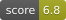

Bootstrap
Sleek, intuitive, and powerful front-end framework for faster and easier web development.
Explore Bootstrap docs »
Report bug
·
Request feature
·
Blog
Bootstrap 5
Our default branch is for development of our Bootstrap 5 release. Head to the v4-dev branch to view the readme, documentation, and source code for Bootstrap 4.
Table of contents
- Quick start
- Status
- What’s included
- Bugs and feature requests
- Documentation
- Contributing
- Community
- Versioning
- Creators
- Thanks
- Copyright and license
Quick start
Several quick start options are available:
- Download the latest release
- Clone the repo:
git clone https://github.com/twbs/bootstrap.git - Install with npm:
npm install bootstrap@v5.3.8 - Install with yarn:
yarn add bootstrap@v5.3.8 - Install with Bun:
bun add bootstrap@v5.3.8 - Install with Composer:
composer require twbs/bootstrap:5.3.8 - Install with NuGet: CSS:
Install-Package bootstrapSass:Install-Package bootstrap.sass
Read the Getting started page for information on the framework contents, templates, examples, and more.
Status

What’s included
Within the download you’ll find the following directories and files, logically grouping common assets and providing both compiled and minified variations.
Download contents
```text bootstrap/ ├── css/ │ ├── bootstrap-grid.css │ ├── bootstrap-grid.css.map │ ├── bootstrap-grid.min.css │ ├── bootstrap-grid.min.css.map │ ├── bootstrap-grid.rtl.css │ ├── bootstrap-grid.rtl.css.map │ ├── bootstrap-grid.rtl.min.css │ ├── bootstrap-grid.rtl.min.css.map │ ├── bootstrap-reboot.css │ ├── bootstrap-reboot.css.map │ ├── bootstrap-reboot.min.css │ ├── bootstrap-reboot.min.css.map │ ├── bootstrap-reboot.rtl.css │ ├── bootstrap-reboot.rtl.css.map │ ├── bootstrap-reboot.rtl.min.css │ ├── bootstrap-reboot.rtl.min.css.map │ ├── bootstrap-utilities.css │ ├── bootstrap-utilities.css.map │ ├── bootstrap-utilities.min.css │ ├── bootstrap-utilities.min.css.map │ ├── bootstrap-utilities.rtl.css │ ├── bootstrap-utilities.rtl.css.map │ ├── bootstrap-utilities.rtl.min.css │ ├── bootstrap-utilities.rtl.min.css.map │ ├── bootstrap.css │ ├── bootstrap.css.map │ ├── bootstrap.min.css │ ├── bootstrap.min.css.map │ ├── bootstrap.rtl.css │ ├── bootstrap.rtl.css.map │ ├── bootstrap.rtl.min.css │ └── bootstrap.rtl.min.css.map └── js/ ├── bootstrap.bundle.js ├── bootstrap.bundle.js.map ├── bootstrap.bundle.min.js ├── bootstrap.bundle.min.js.map ├── bootstrap.esm.js ├── bootstrap.esm.js.map ├── bootstrap.esm.min.js ├── bootstrap.esm.min.js.map ├── bootstrap.js ├── bootstrap.js.map ├── bootstrap.min.js └── bootstrap.min.js.map ```We provide compiled CSS and JS (bootstrap.*), as well as compiled and minified CSS and JS (bootstrap.min.*). Source maps (bootstrap.*.map) are available for use with certain browsers’ developer tools. Bundled JS files (bootstrap.bundle.js and minified bootstrap.bundle.min.js) include Popper.
Bugs and feature requests
Have a bug or a feature request? Please first read the issue guidelines and search for existing and closed issues. If your problem or idea is not addressed yet, please open a new issue.
Documentation
Bootstrap’s documentation, included in this repo in the root directory, is built with Astro and publicly hosted on GitHub Pages at https://getbootstrap.com/. The docs may also be run locally.
Documentation search is powered by Algolia’s DocSearch.
Running documentation locally
- Run
npm installto install the Node.js dependencies, including Astro (the site builder). - Run
npm run test(or a specific npm script) to rebuild distributed CSS and JavaScript files, as well as our docs assets. - From the root
/bootstrapdirectory, runnpm run docs-servein the command line. - Open http://localhost:9001 in your browser, and voilà.
Learn more about using Astro by reading its documentation.
Documentation for previous releases
You can find all our previous releases docs on https://getbootstrap.com/docs/versions/.
Previous releases and their documentation are also available for download.
Contributing
Please read through our contributing guidelines. Included are directions for opening issues, coding standards, and notes on development.
Moreover, if your pull request contains JavaScript patches or features, you must include relevant unit tests. All HTML and CSS should conform to the Code Guide, maintained by Mark Otto.
Editor preferences are available in the editor config for easy use in common text editors. Read more and download plugins at https://editorconfig.org/.
Community
Get updates on Bootstrap’s development and chat with the project maintainers and community members.
- Follow @getbootstrap on X.
- Read and subscribe to The Official Bootstrap Blog.
- Ask questions and explore our GitHub Discussions.
- Discuss, ask questions, and more on the community Discord or Bootstrap subreddit.
- Chat with fellow Bootstrappers in IRC. On the
irc.libera.chatserver, in the#bootstrapchannel. - Implementation help may be found at Stack Overflow (tagged
bootstrap-5). - Developers should use the keyword
bootstrapon packages which modify or add to the functionality of Bootstrap when distributing through npm or similar delivery mechanisms for maximum discoverability.
Versioning
For transparency into our release cycle and in striving to maintain backward compatibility, Bootstrap is maintained under the Semantic Versioning guidelines. Sometimes we screw up, but we adhere to those rules whenever possible.
See the Releases section of our GitHub project for changelogs for each release version of Bootstrap. Release announcement posts on the official Bootstrap blog contain summaries of the most noteworthy changes made in each release.
Creators
Mark Otto
Jacob Thornton
Thanks
Thanks to BrowserStack for providing the infrastructure that allows us to test in real browsers!
Thanks to Netlify for providing us with Deploy Previews!
Sponsors
Support this project by becoming a sponsor. Your logo will show up here with a link to your website. [Become a sponsor]


Backers
Thank you to all our backers! 🙏 [Become a backer]

Copyright and license
Code and documentation copyright 2011-2026 the Bootstrap Authors. Code released under the MIT License. Docs released under Creative Commons.